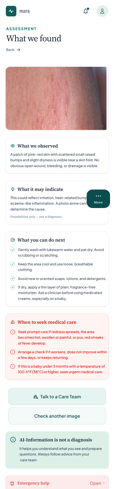
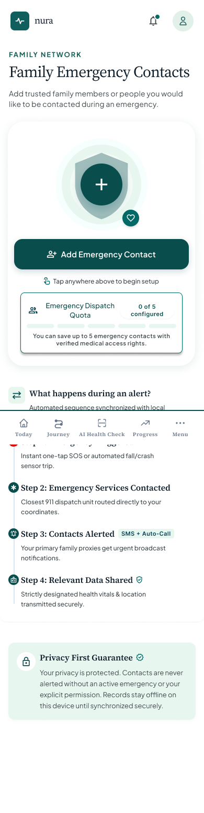
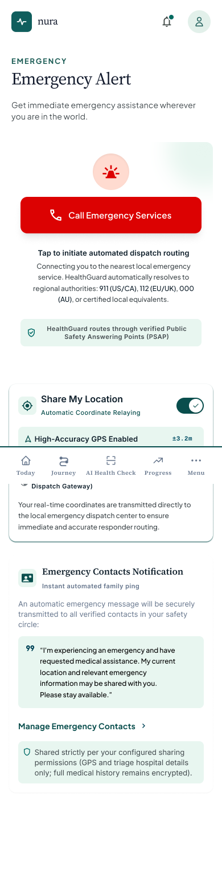
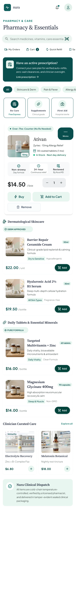
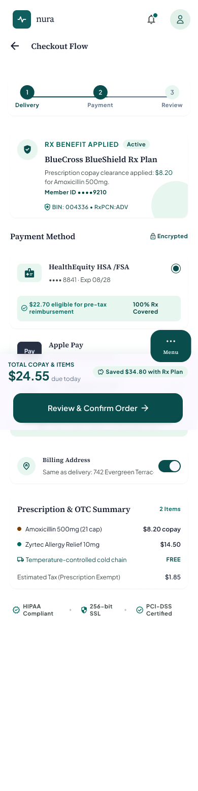
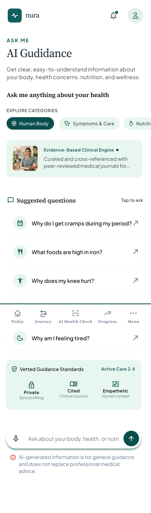
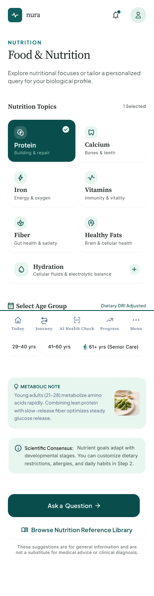
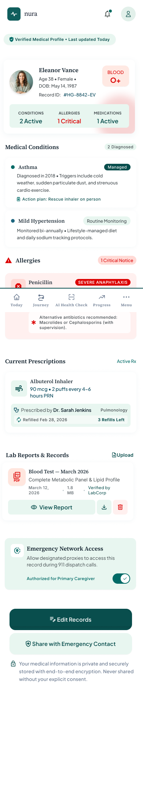

01
Emergency
Prescription Upload
A dedicated emergency option that allows users to quickly contact ambulance or emergency services when urgent assistance is required.
An end-to-end product design exploration investigating how digital healthcare platforms can make ongoing medical treatment, AI triage, continuous tracking, emergency alerts, and human care team handoffs transparent, reassuring, and effortless.
Defining the core patient friction points, design opportunity, framing questions, and product boundaries prior to feature exploration.
Patients using digital healthcare services can find it difficult to understand their overall treatment journey, know what they need to do next, and navigate between AI guidance and human support.
There is an opportunity to create a patient-centered healthcare experience that brings treatment progress, next steps, personalized guidance, and appropriate support into one clear journey.
How might we make an ongoing healthcare journey clearer and easier to navigate while helping patients understand their next steps and access the right support at the right time?
For this concept, I will focus on the patient-facing treatment journey rather than attempting to design an entire healthcare platform. The experience will help patients understand their current treatment stage, identify their next steps, receive personalized guidance, track progress, and access appropriate support.
To ground NURA in real-world operational challenges, I conducted deep-dive research into AIOS Medical, Twin Health, and Sword Health.
| Research Area | AIOS Medical | Twin Health | Sword Health |
|---|---|---|---|
| Product Focus | Full-stack AI healthcare platform centered around an AI doctor & clinic infrastructure. | AI-powered digital platform focused primarily on metabolic health & diabetes. | AI Care platform covering musculoskeletal, women's, cardiometabolic & mental health. |
| Target Users | Patients/Consumers alongside internal clinicians, operations, and care teams. | Patients managing chronic metabolic conditions and daily biomarkers. | Patients needing digital physical therapy, mental health, and specialized recovery. |
| AI Guidance Mechanism | Central autonomous AI doctor for triage, continuous care, and direct prescribing. | AI "Digital Twin" analyzing continuous body sensor data for tailored habits. | AI motion sensors and conversational guides delivering home therapy sessions. |
| AI + Human Synergy | High automation focus; operational escalation to clinical care team when needed. | Hybrid model combining AI insights with human doctors & dedicated health coaches. | AI-first sessions backed by assigned physical therapists and care specialists. |
| Key Design Takeaway | Design for transparency, CX feedback loops, and frictionless customer flows. | Translate dense biometric data into simple, reassuring daily micro-actions. | Maintain unified platform design language across diverse medical specialties. |
Medical jargon causes user anxiety. The AI interface must demystify lab results, prescriptions, and health guidance with clear language.
Care doesn't end at consultations. Patients need structured daily action items, milestone tracking, and seamless medication renewals.
While AI handles rapid triage, urgent symptoms or red flags must immediately offer one-tap human doctor access or emergency SOS alerts.
Current treatment status, today's actions, upcoming dosage reminders.
Milestones, phase timeline, recovery metrics & health progress logs.
Symptom analysis, wound scan, dietary suggestions & prescription upload.
Profiles for kids/parents, medical vault, permissions & lab reports.
One-tap ambulance dispatcher, family alerts & care team chat.
Having completed the core research, competitor analysis, scope, and user flows, these additional feature concepts explore ways to make medical information, pharmacy access, emergency assistance, and family care even more accessible.
A dedicated emergency option that allows users to quickly contact ambulance or emergency services when urgent assistance is required.
A dedicated emergency option that allows users to quickly contact ambulance or emergency services when urgent assistance is required.
Users can add trusted family members or emergency contacts so they can quickly reach them during an emergency.
A dedicated emergency option that allows users to quickly contact ambulance or emergency services when urgent assistance is required.
Users can purchase their prescribed or eligible medications directly through the app. The pharmacy feature can allow users to search for medicines, view medication details, upload or connect prescriptions, add medicines to their cart, and place orders for delivery.
An AI-assisted guidance feature where users can ask about common health concerns and receive understandable information and possible next steps. Examples could include menstrual cramps, knee or joint pain, and nutrition-related questions.
The experience can provide general food and nutrition suggestions based on the user's health-related questions and goals, while clearly distinguishing general guidance from personalized medical advice.
A unified space to manage health journeys for loved ones with custom controls:
Users can securely upload and organize important medical documents such as reports, prescriptions, test results, and other health-related files.
High-fidelity user interface concepts designed for mobile viewports. Scroll inside any card frame to view the full screen length.

Emergency prescription connection & urgent care upload flow.

Visual assessment submission and immediate escalation UI.

Quick-dial emergency network and trusted contacts setup.

One-tap ambulance dispatcher and location sharing screen.

Search medicines, check stock, and review dosage details.

Cart verification, insurance check, and order dispatch flow.

Conversational interface answering symptom and wellness queries.

Personalized dietary suggestions tailored to health goals.
.png)
Emergency Contact.

Live Location Tracker during your emergency sutiation.

Secure categorised repository for lab tests, records & vaccines.

Full chronological roadmap from onboarding to ongoing care.
Through NURA, I explored how human-centered design can turn complex AI-assisted clinical workflows into an encouraging, transparent, and reassuring treatment journey for patients and caregivers alike.